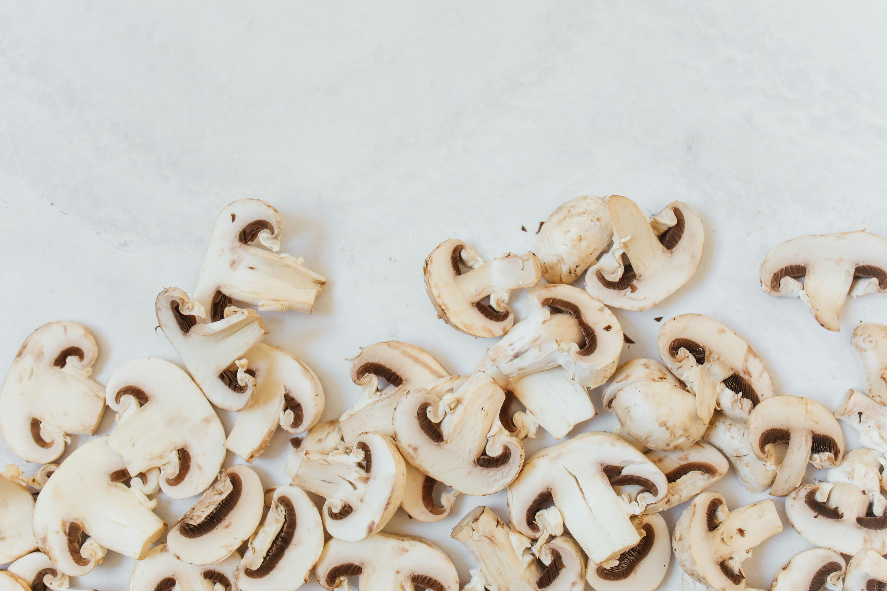

Our Fresh Mushrooms

Premium Button Mushrooms
Our signature offering, perfect for everyday cooking

Bulk Orders
For restaurants and wholesale customers
Locally grown, organically cultivated, and bursting with flavor and nutrition
At Pretty Mush, we cultivate premium button mushrooms in the pristine environment of Ooty, Tamil Nadu. Our mission is to provide you with the freshest, most nutritious mushrooms that are as pretty as they are healthy.
From our farm to your table, we ensure quality at every step of the journey.
Cultivated in a controlled environment without pesticides or harmful chemicals.
Grown in the ideal climate conditions of the Nilgiri Hills for optimal flavor and texture.
Packed with proteins, vitamins, minerals, and antioxidants for your wellbeing.
Harvested and delivered at peak freshness to maintain quality and flavor.
Our signature offering, perfect for everyday cooking
For restaurants and wholesale customers
Founded in the heart of Ooty, Pretty Mush began with a simple dream: to grow the most delicious and nutritious button mushrooms while respecting nature's processes.
Our controlled growing environment in the Nilgiri Hills provides the perfect conditions for mushroom cultivation - cool climate, clean air, and pristine water.
Every mushroom we harvest reflects our commitment to quality, sustainability, and health.
Learn More About UsInterested in our products? Have questions about mushroom cultivation? We'd love to hear from you!